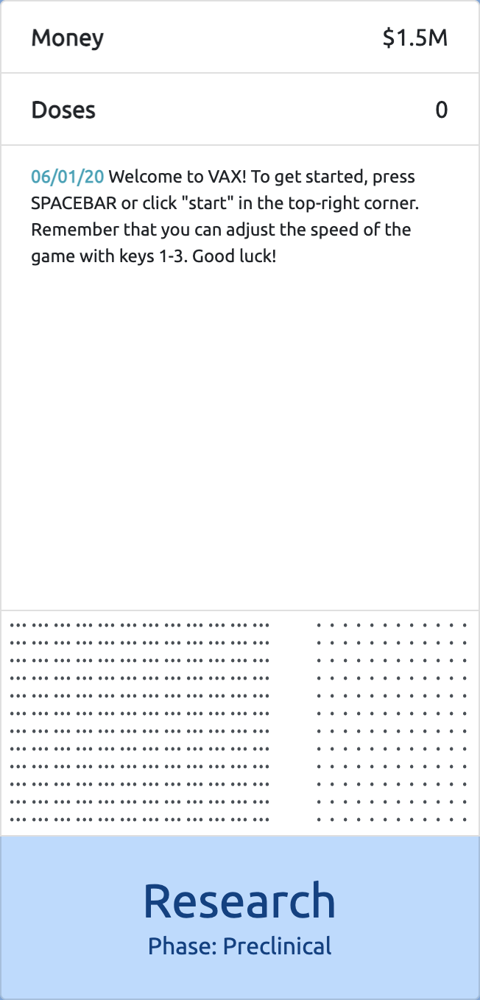
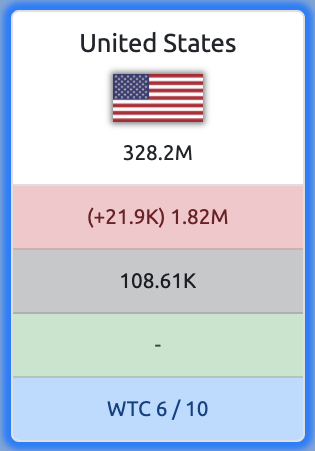
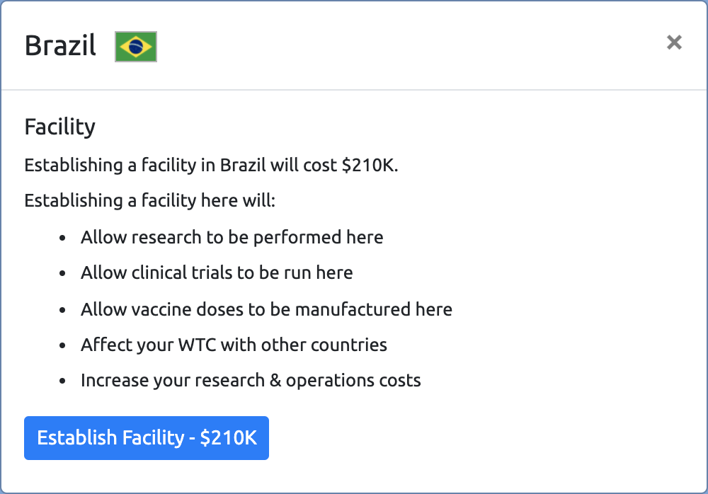
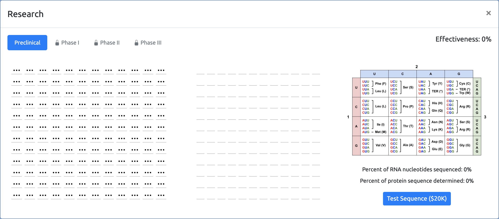

At the top-right of the dashboard you will see this:
The current date is displayed on the left. VAX begins on June 1, 2020 and follows a realistic timeline.
Days will pass depending on how fast your speed is currently set at. To adjust the speed, you can press 1, 2, or 3 on your keyboard. The default speed (x2) causes days to pass every two seconds.
Next is the play/pause button. This can be used to stop the day timer. You can also use the SPACEBAR to perform this function.
Finally, there is a button to restart your game if things aren't going so well.
On the left-hand side of the dashboard is the console:

Your money is displayed at the top. Once the game begins, you will also see the change in your money (either positive or negative) displayed here as well.
Underneath that is your doses in storage. This becomes more important later on in the game when you begin manufacturing & distribution.
The large box is the event console which keeps a record of all important events that happen during the course of a VAX game.
The genetic code is displayed underneath that (if your screen is large enough). This will be explained in more detail later on.
Finally, a button to open the research menu is at the bottom. Research will also be described in more detail later on. The research menu can also be opened by pressing SHIFT.
On the right-hand side of the dashboard are the country panels. Here is an example:

At the top is the name of the country and its flag. Right underneath that is its population. In VAX, it is assumed that a country's population remains constant and that births and deaths do not change it over time.
The red box shows the cumulative cases that a country has experienced. The daily change in infections is also shown. Note that because this is a cumulative measure, this number will never go down - but your goal is to stop it from increasing!
The black box shows the cumulative deaths caused by the disease. Again, the daily change is shown and because this is a cumulative measure this number will never decrease.
The green box shows the vaccinated population. However, it will only display this once you have gained licensure to vaccinate in the country which will occur later on in the game.
The blue box shows the country's willingness to cooperate. WTC will be explained more next.
There are 18 countries in VAX, selected because they had the highest number of cumulative cases as of June 1, 2020. It is your job to eliminate the virus in all of these countries by delivering effective vaccines to their citizens!
WTC is a measure of how good your relations are with a country's government. It is a number between 1 and 10, with 10 being the best.
Your starting location influences your initial WTC with countries. The country where your headquarters are basedd will also start with a boost in WTC.
There are several actions that can influence WTC, including:
Establishing/upgrading facilities
Increasing your vaccine's effectiveness and safety
Making progress in research
Running successful/unsuccessful research clinical trials
Lowering the infection rate by vaccinating countries
WTC can have an impact on:
How much governments charge you to establish/upgrade facilities in their country
Whether or not governments will grant you a license to vaccinate in their country
How many vaccine doses they would like to order from you per day
It is important to improve your WTC with all countries. Without a high enough WTC you will not be able to vaccinate (or vaccinate at a fast rate) in countries, and you must vaccinate every country to end the pandemic and win the game!
Clicking on a country panel will open its country menu. You can also hover over a country panel to view a keyboard shortuct for opening its menu.
The actions available in a country menu will depend on whether this country has a facility established in it, and what phase of the game you are in. Here is a menu of a country without a facility at the beginning of the game:

As you can see, you have the option to establish a facility in this country if one does not already exist. The cost of establishing the facility will depend on the country's WTC. Facilities will be explained in more detail next.
If you look closely at this country panel, you can see a blue glow around it. This means that there is a facility currently established in this country.
Facilities are instrumental to the development and manufacturing of your vaccine. Only at your facilities can:
Research take place
Clinical trials be run
Vaccine doses be manufactured
Facilities can be upgraded. Your headquarters begin at level 2 and newly established facilities begin at level 1. You can upgrade your facilities up to the maximum level of 3. The intensity of the blue glow around a country panel shows the level of the facility established there.
While facilities certainly come with many benefits, keep in mind that researchers/workers at facilities must be paid each day, and that the number of researchers/workers at a facility increases every time you upgrade it. So think twice before establishing level 3 facilities in every country!
Remember that facilities and all their associated functions can be managed from their country menus.
Your first goal is to develop an effective and safe vaccine. To do this you will need to conduct research and run clinical trials.
There are four research phases:
Preclinical
Phase I clinical trials
Phase II clinical trials
Phase III clinical trials
In each one, you will have the ability to increase your vaccine's effectiveness, which will improve your WTC with other countries and encourage them to license you. Conducting successful research will also award you with funds from your headquarter country's government.
Remember that you can quickly open the research menu by pressing SHIFT.
In the preclinical phase, your goal is to research the virus's RNA sequence and translate it into a protein sequence which will be used in your vaccine.
This is what the preclinical research menu looks like:

Looks confusing? Don't worry - the next few pages will help you make sense of this screen!
Every living organism contains DNA, which is a molecule consisting of units called nucleotides. There are four different nucleotide bases that can be put together into a specific sequence.
DNA's cousin is RNA, which consists of four nucleotide bases as well. These bases are adenine (A), uracil (U), cysteine (C), and guanine (G).
Your body's cells produce proteins based on the nucleotide sequence in RNA molecules that are presented to it. It can do this because every protein also consists of units called amino acids, of which there are 20. Biologists have determined which nucleotides are translated into what amino acids and have created the following table to show this information:
Say that you have the nucleotide sequence CUG (sequences of three nucleotides are called a codon). The codon chart tells you that if the first nucleotide in a codon is C, the second one is U, and the third one is G, the amino acid it codes for is leucine (shortened to L).
The codon chart shows that several nucleotide sequences code for the same amino acid. Therefore, you don't always have to know all three nucleotides in a codon to determine the amino acid that it codes for!
Your researchers at your facilities will work to unlock nucleotides in the virus RNA sequence. Establishing/upgrading facilities will help you unlock nucleotides faster. You must translate these nucleotides into amino acids and run tests to confirm that you have translated them correctly.
There are 144 codons and amino acids in the full protein sequence. To make decoding them easier, some codons with all three nucleotides unlocked will be automatically decoded into amino acids (and their entry boxes will be colored yellow). The more facilities you have (and the higher their level is), the more "bonus" amino acids you will be awarded!
Remember that your researchers must be paid every day, so you should not wait until the entire nucleotide sequence is decoded to run your first test! Every test that makes some progress in decoding the protein sequence will award you with funds from the government.
After you decode the entire protein sequence and complete the preclinical phase, you will begin clinical trials. These trials will not only improve your WTC but also give you the opportunity to increase your vaccine's effectiveness and safety.
There are 3 phases of clinical trials:
In Phase I, you will test combinations of several additional vaccine ingredients (known as excipients) to determine which ones increase your vaccine's effectiveness by the most. You will set up these combinations (known as candidates) in the research menu.
In Phase II, you will test different dosages of your vaccine to determine which ones are not only effective, but also safe enough for use. The research menu will display all your trial results to help you determine the optimal dosage.
In Phase III, you will have the opportunity to research several "upgrades" at your facilities that can further increase your vaccine's effectiveness and safety. These upgrades will be displayed in the research menu.
Remember that clinical trials can only be run at your facilities (through the country menu). Upgrading your facilities will allow them to conduct trials faster.
Starting from Phase III, your vaccine will be eligible to earn licensure from governments if it meets their effectiveness and safety standards. A license allows you to distribute vaccine doses to a country, which will take care of administering them for you!
Once research has concluded, your facilities will be able to manufacture vaccine doses. Higher level facilities will be able to manufacture more doses per day.
Although governments will pay you to order vaccine doses, you must also spend money to manufacture them, so don't manufacture too many more doses than are currently in demand!
Vaccinating countries will help increase your WTC. This is especially important to help you gain licensure in countries that did not initially grant you a license during Phase III!
Once a country's population has been sufficiently vaccinated to bring its infection rate down to zero, it will be declared virus-free. Eliminate the virus in every country to end the pandemic and win the game!
There are other mechanics in the game, such as requesting funds, which have not been mentioned in this tutorial. However, the most important ones have been covered and it is your job to explore VAX and figure out how all the other ones work!